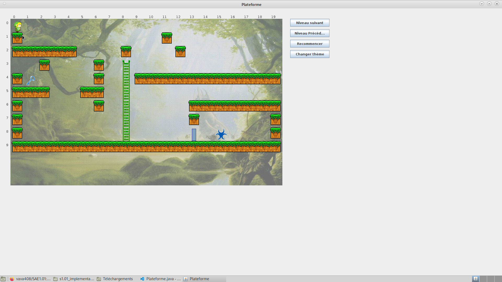

Description
Jeux plateforme est un jeu de plateforme en 2D qui propose des niveaux variés et des graphismes colorés. Le joueur doit naviguer à travers des obstacles (échelles, trou ) et collecter des clefs afin de dévérouiller les portes pour pouvoir passer au niveau suivant. L'utilisateur peut choisir entre plusieurs thèmes de jeu, chacun avec ses propres graphismes. Il peut également créer ses propres niveaux grâce à l'extension niveauXX.data.
Fonctionnalités
- Saut
- Chute lente
- Interface graphique
- Création de niveaux personnalisés
Technologies utilisées
- JAVA